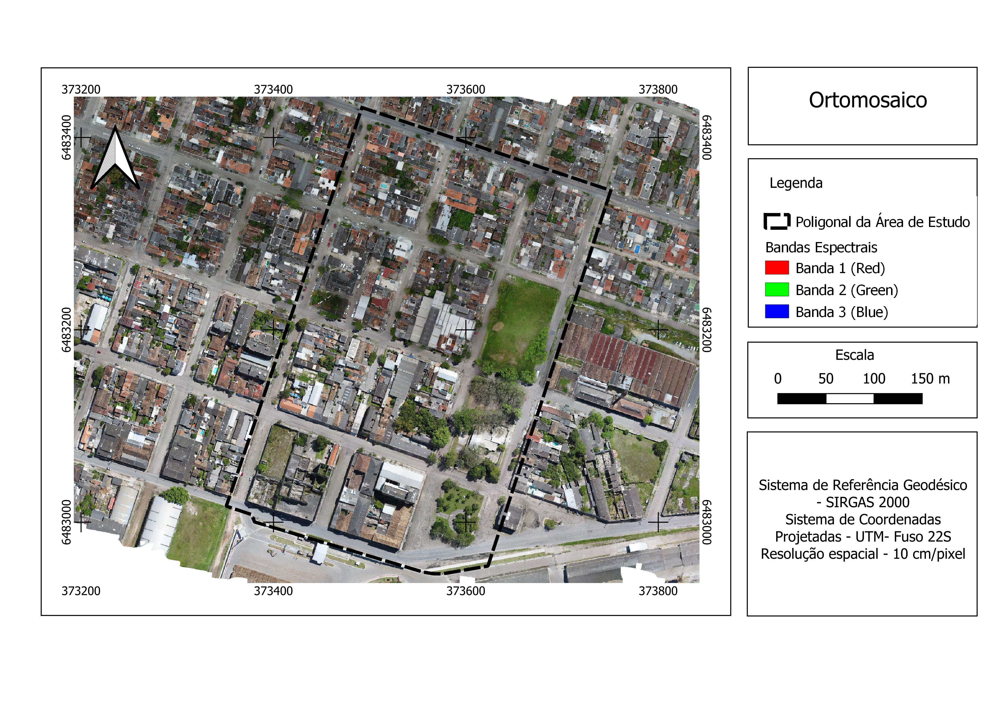

Catálogo
Mapas Profissionais
Galeria de produtos cartográficos desenvolvidos com dados abertos e ferramentas GIS.

Disponível
Mapeamento de Uso e Cobertura da Terra
Classificação supervisionada e análise de transição de paisagem utilizando dados do MapBiomas e QGIS.
MapBiomas
QGIS
Raster
🌍 Meio Ambiente & Agro
Ver PDF

Disponível
Índice de Vegetação (NDVI) por Safra
Análise de vigor vegetativo e saúde da cultura através de imagens de satélite Sentinel-2.
Sentinel-2
Banda 4 e 8
Agricultura
🌱 Agricultura de Precisão
Ver PDF

Disponível
Biomas e Áreas Protegidas
Mapa temático sobrepondo os biomas brasileiros, unidades de conservação (SNUC) e terras indígenas.
IBGE
QGIS
Cartografia Temática
📊 Gestão Ambiental
Ver PDF

🏙️
Disponível
Projeto Cartográfico do Porto de Pelotas
Mapeamento cadastral urbano detalhado, com classificação de lotes, praças e edificações. Projeto acadêmico LabSG / UFPel.
QGIS
Layout
SIRGAS 2000
🏙️ Planejamento Urbano
Ver PDF